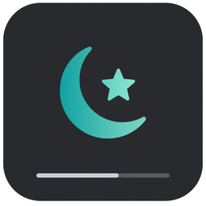

Left-click
Today’s adhan and iqama. A dot marks the prayer the countdown is aimed at.

Mawaqit WidgetWindows 11 · times from Mawaqit
A chip inside the taskbar, or a strip that keeps windows off the bottom of the screen. Left-click the schedule. Right-click your mosque. MIT.
Fetching the latest build…
| Prayer | Adhan | Iqama | |
|---|---|---|---|
| ● | Fajr | 04:52 | 05:12 |
| Dhuhr | 12:18 | 12:30 | |
| Asr | 15:41 | 15:50 | |
| Maghrib | 18:03 | 18:08 | |
| Isha | 19:28 | 19:40 |
Change mosque…
Expanded chip pins to the left of the taskbar. Compact is countdown only.
Today’s adhan and iqama. A dot marks the prayer the countdown is aimed at.
Mosque, favorites (max 5), compact or expanded, countdown target, placement, hide, quit.
Adhan. Iqama. Or adhan, then that prayer’s iqama, then the next adhan.
If the chip cannot sit on a packed bar, Show / Hide from the icon near the clock.
Unsigned build — if SmartScreen appears, More info → Run anyway. Right-click the downloaded Setup → Properties → Unblock if you see it.